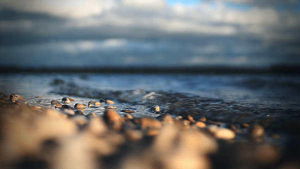

Sound of the Sea
Being near and hearing the ocean brings calm. The repetitive sounds of the water crashing is soothing and calming. "These slow, whooshing noises are the sounds of non-threats, which is why they work to calm people," says associate professor of biobehavioral health Orfeu Buxton. "It's like they're saying: "Don't worry, don't worry, don't worry." These slow repetitive sounds slow breathing and reduce stress, bringing you closer to a meditative state known as Blue Mind.
How the Beach Benefits Your Brain, According to Science